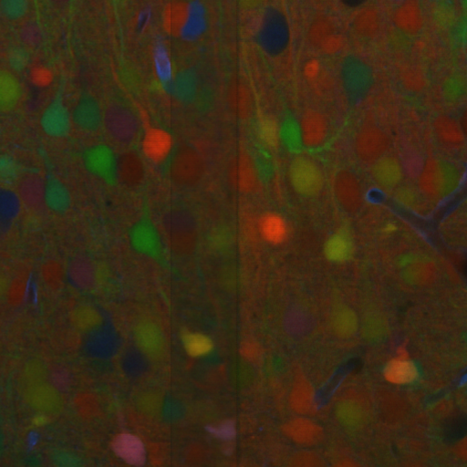
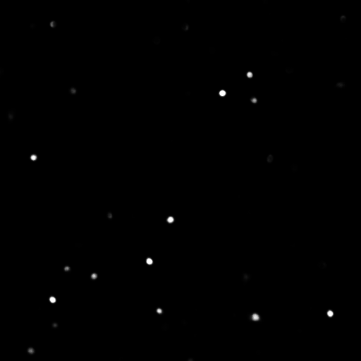
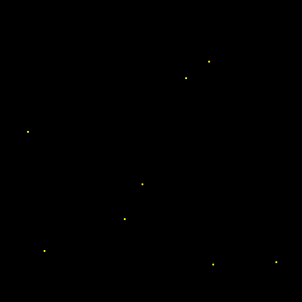

Detection¶
The goal of this workflow is to localize objects in the input image, not requiring a pixel-level class. Common strategies produce either bounding boxes containing the objects or individual points at their center of mass [ZWKrahenbuhl19], which is the one adopted by BiaPy.
- Input:
Image.
.csvfile containing the list of points to detect.
- Output:
Image with the detected points as white dots.
.csvfile with the list of detected points in napari format.A
_prob.csvfile with the same list of points as above but now with their detection probability (also in napary format).
In the figure below an example of this workflow’s input is depicted:

Input image.¶ |
Input |
Description of the .csv file:
Each row represents the middle point of the object to be detected. Each column is a coordinate in the image dimension space.
The first column name does not matter but it needs to be there. No matter also the enumeration and order for that column.
If the images are
3D, three columns need to be present and their names must be[axis-0, axis-1, axis-2], which represent(z,y,x)axes. If the images are2D, only two columns are required[axis-0, axis-1], which represent(y,x)axes.For multi-class detection problem, i.e.
MODEL.N_CLASSES > 1, add an additionalclasscolumn to the file. The classes need to start from1and consecutive, i.e.1,2,3,4...and not like1,4,8,6....Coordinates can be float or int but they will be converted into ints so they can be translated to pixels.
Data preparation¶
To ensure the proper operation of the library the data directory tree should be something like this:
dataset/
├── train
│ ├── x
│ │ ├── training-0001.tif
│ │ ├── training-0002.tif
│ │ ├── . . .
│ │ ├── training-9999.tif
│ └── y
│ ├── training_groundtruth-0001.csv
│ ├── training_groundtruth-0002.csv
│ ├── . . .
│ ├── training_groundtruth-9999.csv
└── test
├── x
│ ├── testing-0001.tif
│ ├── testing-0002.tif
│ ├── . . .
│ ├── testing-9999.tif
└── y
├── testing_groundtruth-0001.csv
├── testing_groundtruth-0002.csv
├── . . .
├── testing_groundtruth-9999.csv
Warning
Ensure that images and their corresponding masks are sorted in the same way. A common approach is to fill with zeros the image number added to the filenames (as in the example).
Problem resolution¶
Firstly, a pre-processing step is done where the list of points of the .csv file is transformed into point mask images. During this process some checks are made to ensure there is not repeated point in the .csv. This option is enabled by default with PROBLEM.DETECTION.CHECK_POINTS_CREATED so if any problem is found the point mask of that .csv will not be created until the problem is solve.
After the train phase, the model output will be an image where each pixel of each channel will have the probability (in [0-1] range) of being of the class that represents that channel. The image would be something similar to the left picture below:

Model output.¶ |

Final points considered.¶ |
So those probability images, as the left picture above, can be converted into the final points, as the rigth picture above, we use peak_local_max function to find peaks in those probability clouds. For that, you need to define a threshold, TEST.DET_MIN_TH_TO_BE_PEAK variable in our case, for the minimum probability to be considered as a point. You can set different thresholds for each class in TEST.DET_MIN_TH_TO_BE_PEAK, e.g. [0.7,0.9].
After this process you can apply a post-processing to remove possible close points with TEST.POST_PROCESSING.REMOVE_CLOSE_POINTS. For that you need to define a radius to remove the point around each one with TEST.POST_PROCESSING.REMOVE_CLOSE_POINTS_RADIUS variable. You can set different radius for each class, e.g. [0.7,0.9]. In this post-processing is important to set DATA.TEST.RESOLUTION, specially for 3D data where the resolution in z dimension is usually less than in other axes. That resolution will be taken into account when removing points.
Finally, the output files are generated from the remaining final points.
Configuration file¶
Find in templates/detection folder of BiaPy a few YAML configuration templates for this workflow.
Special workflow configuration¶
Here some special configuration options that can be selected in this workflow are described:
Metrics: during the inference phase the performance of the test data is measured using different metrics if test masks were provided (i.e. ground truth) and, consequently,
DATA.TEST.LOAD_GTis enabled. In the case of detection the Intersection over Union (IoU), precision, recall and F1 are calculated:IoU metric, also referred as the Jaccard index, is essentially a method to quantify the percent of overlap between the target mask and the prediction output. Depending on the configuration different values are calculated (as explained in Test phase).
Precision, is the fraction of relevant instances among the retrieved instances. More info here.
Recall, is the fraction of relevant instances that were retrieved. More info here.
F1, is the harmonic mean of the precision and recall. More info here.
The last three metrics, i.e. precision, recall and F1, use
TEST.DET_TOLERANCEto determine when a point is considered as a true positive. In this process the test resolution is also taken into account. You can set different tolerances for each class, e.g.[10,15].Post-processing: you an use
TEST.POST_PROCESSING.REMOVE_CLOSE_POINTSto remove redundant close points to each other as described previously in Problem resolution.
Run¶
Command line: Open a terminal as described in Installation. For instance, using unet_3d_detection.yaml template file, the code can be run as follows:
# Configuration file
job_cfg_file=/home/user/unet_3d_detection.yaml
# Where the experiment output directory should be created
result_dir=/home/user/exp_results
# Just a name for the job
job_name=unet_detection_3d
# Number that should be increased when one need to run the same job multiple times (reproducibility)
job_counter=1
# Number of the GPU to run the job in (according to 'nvidia-smi' command)
gpu_number=0
# Move where BiaPy installation resides
cd BiaPy
# Load the environment
conda activate BiaPy_env
python -u main.py \
--config $job_cfg_file \
--result_dir $result_dir \
--name $job_name \
--run_id $job_counter \
--gpu $gpu_number
Docker: Open a terminal as described in Installation. For instance, using unet_3d_detection.yaml template file, the code can be run as follows:
# Configuration file
job_cfg_file=/home/user/unet_3d_detection.yaml
# Where the experiment output directory should be created
result_dir=/home/user/exp_results
# Just a name for the job
job_name=unet_detection_3d
# Number that should be increased when one need to run the same job multiple times (reproducibility)
job_counter=1
# Number of the GPU to run the job in (according to 'nvidia-smi' command)
gpu_number=0
docker run --rm \
--gpus $gpu_number \
--mount type=bind,source=$job_cfg_file,target=$job_cfg_file \
--mount type=bind,source=$result_dir,target=$result_dir \
--mount type=bind,source=$data_dir,target=$data_dir \
danifranco/em_image_segmentation \
-cfg $job_cfg_file \
-rdir $result_dir \
-name $job_name \
-rid $job_counter \
-gpu $gpu_number
Results¶
The results are placed in results folder under --result_dir directory with the --name given.
Following the example, you should see that the directory /home/user/exp_results/unet_detection_3d has been created. If the same experiment is run 5 times, varying --run_id argument only, you should find the following directory tree:
unet_detection_3d/
├── config_files/
│ └── unet_3d_detection.yaml
├── checkpoints
│ └── model_weights_unet_detection_3d_1.h5
└── results
├── unet_detection_3d_1
├── . . .
└── unet_detection_3d_5
├── cell_counter.csv
├── aug
│ └── .tif files
├── charts
│ ├── unet_detection_3d_1_jaccard_index.png
│ ├── unet_detection_3d_1_loss.png
│ └── model_plot_unet_detection_3d_1.png
├── per_image
│ └── .tif files
└── per_image_local_max_check
└── .tif files
config_files: directory where the .yaml filed used in the experiment is stored.unet_3d_detection.yaml: YAML configuration file used (it will be overwrited every time the code is run).
checkpoints: directory where model’s weights are stored.model_weights_unet_detection_3d_1.h5: model’s weights file.
results: directory where all the generated checks and results will be stored. There, one folder per each run are going to be placed.unet_detection_3d_1: run 1 experiment folder.cell_counter.csv: file with a counter of detected objects for each test sample.aug: image augmentation samples.charts:unet_detection_3d_1_jaccard_index.png: IoU (jaccard_index) over epochs plot (when training is done).unet_detection_3d_1_loss.png: Loss over epochs plot (when training is done).model_plot_unet_detection_3d_1.png: plot of the model.
per_image:.tif files: reconstructed images from patches.
per_image_local_max_check:.tif files: Same asper_imagebut with the final detected points.
Note
Here, for visualization purposes, only unet_detection_3d_1 has been described but unet_detection_3d_2, unet_detection_3d_3, unet_detection_3d_4 and unet_detection_3d_5 will follow the same structure.